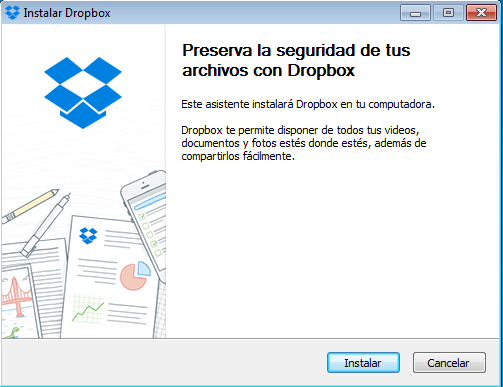
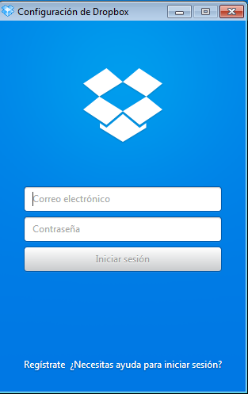
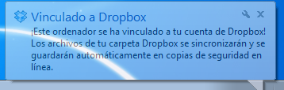
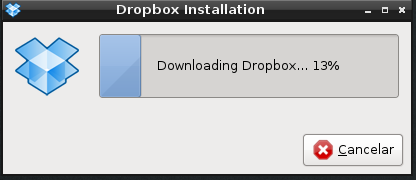
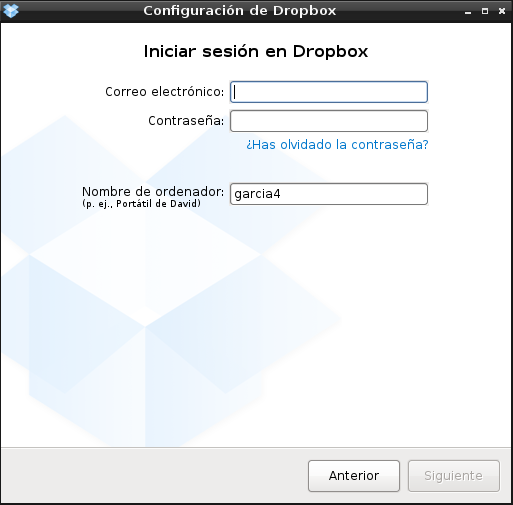
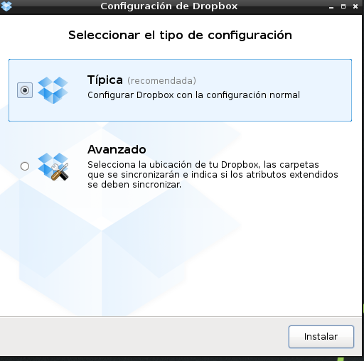
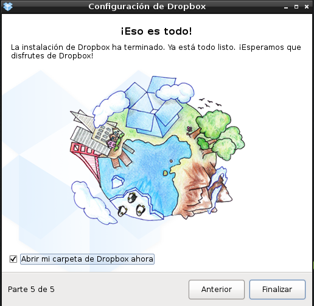
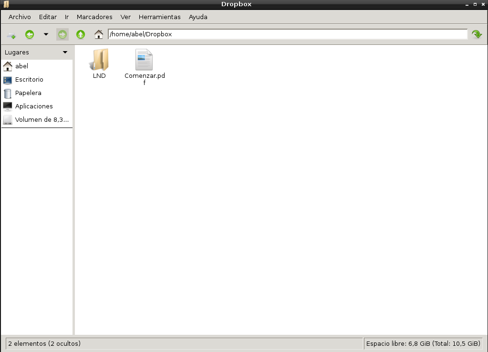

- Módulo: Fundamentos de Hardware
- Título del trabajo Almacenamiento en la nube
- Componentes del grupo: Abel Garcia
- Curso Académico: 2013/2014
- Fecha de entrega: 24 de abril de 2014



Descargar el programa de la pagina o desde instalar/quitar progama





El progama dropbox es util porque puedes guardar la información y cogerla de ccualquier ordenador de manera sensilla sin tener que estando llevando pendrive a todas partes.